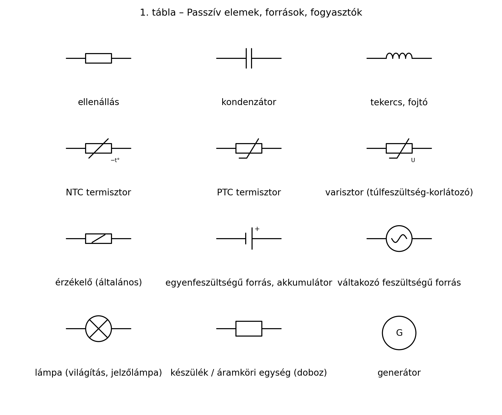
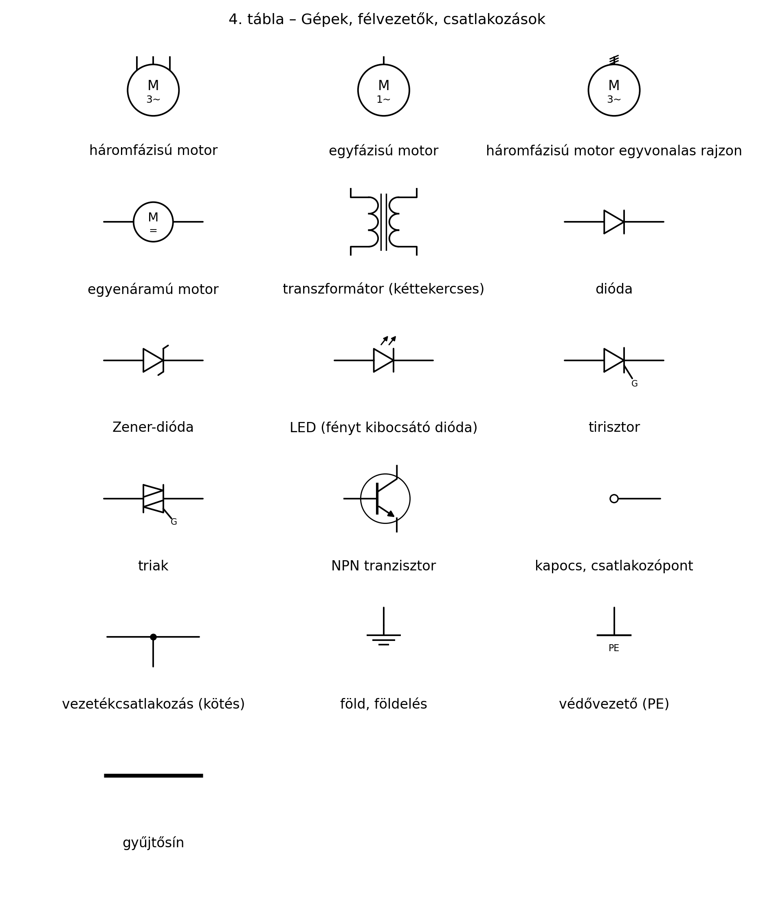

Ez a függelék a könyv kulcsfogalmait rögzíti egységes magyar és angol (vagy régi hazai) névvel, a magyar kifejezés szerinti ábécésorrendben. A zárójeles szám a fogalmat bevezető fejezet.alfejezet (a nyomtatott könyv számozása). A képleteket a Képlet- és jelölésgyűjtemény függelék tartalmazza.
Terminológiai elv. A könyv a mai szabványok szerinti magyar szakszót használja (alapvédelem, hibavédelem, kiegészítő védelem), de megadja a régi, a gyakorlatban még élő szavakat is: az érintésvédelem a hibavédelem régi neve, a nullázás a TN-rendszerű hibavédelem, a védőföldelés a TT-rendszerű, a FI-relé az áram-védőkapcsoló köznyelvi neve. A régi MSZ-rajzjeleket csak ‘régi terveken ezt találod’ megjegyzéssel említjük (ellenőrizendő: a pontos megfeleltetés a hatályos szabvány szerint).
| Magyar | English | Jelentés (hol vezetjük be) |
|---|---|---|
| alapvédelem | basic protection | az áramütés elleni védelem alapszintje: a feszültség alatti részek közvetlen érintése elleni védelem (szigetelés, burkolat) (21.1) |
| áram-védőkapcsoló (FI) | residual current device (RCD) | a differenciaáramot figyelő védelem; 30 mA-es kiegészítő védelemként (21.4) |
| áramváltó | current transformer | mérőtranszformátor, a szekunderét sosem szabad szakadásban hagyni (25.4) |
| aszinkron motor | induction (asynchronous) motor | a forgórész a forgó mezőnél lassabban forog; a szlip miatt indukálódik benne feszültség (26.1) |
| áttétel | turns ratio | a transzformátor primer és szekunder feszültségének (menetszámának) aránya (25.1) |
| billenőnyomaték | pull-out (breakdown) torque | az aszinkron motor maximális nyomatéka (26.2) |
| busz (épületautomatikai) | bus | közös adatvezetéken kommunikáló rendszer, pl. KNX, DALI (20.3) |
| csillagkapcsolás | star (wye) connection | a három tekercs egy végpontja közös (csillagpont) (7.2) |
| csillag–delta indítás | star-delta starting | az indítási áram csökkentése a tekercsek ideiglenes csillagkapcsolásával (26.4, 32.3) |
| csúcsérték | peak value | a váltakozó mennyiség pillanatnyi maximuma; 230 V effektívnek 325 V csúcs felel meg (6.1) |
| dióda | diode | egyirányú vezetésű félvezető (37.1) |
| effektív érték | RMS value | az egyenértékű hőhatású egyenáramú érték (6.1) |
| egyenpotenciálra hozás (EPH) | equipotential bonding | a vezetőképes részek összekötése azonos potenciálra (22.2) |
| egyvonalas rajz | single-line diagram | az elosztó vagy hálózat egyszerűsített rajza egy vonallal a három fázis helyett (12.3) |
| elosztóberendezés | switchgear and controlgear assembly | kapcsolókészülékek, sínek és szekrény összeépített egysége (34.1) |
| EPH | equipotential bonding | lásd: egyenpotenciálra hozás (22.2) |
| erősáram | heavy current / power | energiaátvitelre és -elosztásra használt villamos áram; a gyengeárammal szemben (1.1) |
| fázisjavítás | power factor correction | a meddőteljesítmény kompenzálása a cosφ növelésére (36.1) |
| fázissorrend | phase sequence | a fázisok csúcsértékeinek időbeli sorrendje; megszabja a forgásirányt (7.4) |
| fázisszög | phase angle | a feszültség és az áram időbeli eltolódása szögben kifejezve (6.2) |
| fázor | phasor | a szinuszos mennyiség vektoros ábrázolása (6.1) |
| feszültségesés | voltage drop | a vezeték ellenállásán/impedanciáján eső feszültség (10.4) |
| feszültségmentesítés | isolation / de-energising | a munkahely biztonságos kikapcsolása az öt biztonsági szabály szerint (2.4) |
| feszültségosztó | voltage divider | soros ellenállásokon megosztott feszültség (4.1) |
| fogyasztásmérő | energy meter | a villamos energiát mérő készülék (8.4) |
| frekvenciaváltó | variable frequency drive (VFD) | az aszinkron motor fordulatszámát a tápfrekvencia változtatásával szabályozó készülék (26.5, 41.4) |
| háromfázisú rendszer | three-phase system | három, 120°-kal eltolt feszültség rendszere (7.1) |
| hatásfok | efficiency | a hasznos és a felvett teljesítmény hányadosa (3.3) |
| hatásos teljesítmény | active (real) power | a hasznos munkát végző teljesítmény, W (6.4) |
| hibavédelem | fault protection | az áramütés elleni védelem hibahelyzetre (régi: érintésvédelem) (21.1) |
| hőkioldó | thermal overload relay | a motor túlterhelés elleni védelme bimetállal (31.3) |
| hurokimpedancia | loop impedance | a hibahurok impedanciája, a kioldási feltétel alapja (21.3, 24.3) |
| induktivitás | inductance | a tekercs önindukciós képessége, H (5.4) |
| IP-védettség | ingress protection (IP code) | por és víz elleni védettségi kód (34.3) |
| kapacitás | capacitance | a kondenzátor töltéstároló képessége, F (5.1) |
| kapocsdoboz | terminal box | a motor tekercsvégeinek csatlakozási helye (26.3) |
| kiegészítő védelem | additional protection | pl. 30 mA-es FI az aljzatköröknél (21.4) |
| kioldási feltétel | disconnection condition | a védelemnek az előírt időn belül ki kell oldania hibánál (21.3) |
| Kirchhoff-törvények | Kirchhoff’s laws | csomóponti és hurok törvény (4.4) |
| kismegszakító | miniature circuit breaker (MCB) | termikus és mágneses kioldású túláramvédelem, B/C/D jelleg (18.2) |
| kondenzátor | capacitor | töltést tároló passzív alkatrész (5.1) |
| kötődoboz | junction box | vezetékek csatlakoztatására szolgáló doboz (16.1) |
| lágyindító | soft starter | az indítási áramot és nyomatékot a feszültség növelésével szabályozó készülék (26.4) |
| látszólagos teljesítmény | apparent power | S = U·I, VA (6.4) |
| mágneskapcsoló | contactor | elektromágnesesen működtetett kapcsolókészülék (31.2) |
| meddő teljesítmény | reactive power | az elektromágneses terek építésére fordított teljesítmény, var (6.4) |
| megszakítóképesség | breaking capacity | az a legnagyobb zárlati áram, amit a készülék biztonságosan megszakít (18.4) |
| motorvédő kapcsoló | motor protection circuit breaker | kombinált zárlat- és túlterhelés-védelem (31.3) |
| névleges áram | rated current | a készülék tartós áramterhelhetősége (18.2) |
| nullavezető | neutral conductor | N, világoskék (7.3) |
| Ohm törvénye | Ohm’s law | U = I·R (3.3) |
| olvadóbiztosító | fuse | a túláramot megolvadással megszakító védelem (18.1) |
| PE (védővezető) | protective conductor | zöld-sárga vezető a hibavédelemhez (22.3) |
| PEN-vezető | PEN conductor | védő- és nullavezetőként egyaránt működő vezető (22.3) |
| PLC | programmable logic controller | programozható vezérlő (32.6) |
| rezonancia | resonance | az induktív és kapacitív reaktancia kiegyenlítődése (6.3) |
| szakaszoló | disconnector | terhelés nélkül kapcsoló készülék a biztonságos leválasztáshoz (31.3) |
| szelektivitás | selectivity | csak a hibahelyhez legközelebbi védelem old ki (18.4) |
| szigetelési ellenállás | insulation resistance | a szigetelés ellenállása, mérése megaohmmérővel (24.2) |
| szinkron gép | synchronous machine | a forgórész a forgó mezővel azonos fordulatszámon forog (27.1) |
| szlip | slip | a szinkron és a tényleges fordulatszám relatív különbsége (26.2) |
| terhelhetőség | current-carrying capacity | a vezeték tartós megengedett árama (Iz) (10.3) |
| tirisztor | thyristor | vezérelhető egyirányú erősáramú félvezető (37.4) |
| transzformátor | transformer | váltakozó feszültséget átalakító gép (25.1) |
| túláram | overcurrent | a névlegest meghaladó áram (18.1) |
| túlfeszültség-védelem (SPD) | surge protective device | a túlfeszültséget levezető készülék (23.3) |
| UPS | uninterruptible power supply | szünetmentes áramforrás (36.2) |
| vezeték / kábel | wire / cable | szigetelt vezető(k); jelölésük és szerelési módjuk (10.1) |
| villámvédelem | lightning protection | külső és belső rendszer a becsapás hatásai ellen (23.2) |
| zárlati áram | short-circuit current | a hibahelyen folyó nagy áram (18.3) |
Ez a függelék a könyv legfontosabb képleteit és jelöléseit gyűjti egy helyre. A feltételeket (szimmetrikus terhelés, szinuszos jelalak, névleges adatok) mindig ellenőrizni kell; a pontos kimondás a zárójelben megadott fejezet.alfejezetben található. A védelmi határértékek, időkorlátok és terhelhetőségek tanulási példák: tervezéskor és ellenőrzéskor mindig a hatályos szabvány és a gyártói adatlap a mérvadó (ellenőrizendő).
Ez a függelék a könyv kapcsolási rajzain előforduló összes jelölést gyűjti egy helyre: a rajzjeleket (MSZ EN 60617 / IEC 60617 szerinti egyszerűsített ábrázolásban), a készülékek betűjeleit (MSZ EN IEC 81346-2), a kapocs- és vezetőjelöléseket (MSZ EN 60445, MSZ EN 60947 sorozat), valamint a rajzolási megállapodásokat. A rajzjeleket ugyanaz a rajzoló készítette, amely a fejezetek ábráit, így pontosan úgy néznek ki, ahogy a fejezetekben. A szabványszámok és a betűjel-hozzárendelések tanulási segédletek; a hatályos szabványszöveg és a tervdokumentáció jelmagyarázata a mérvadó (ellenőrizendő: MSZ EN 60617 adatbázis, MSZ EN IEC 81346-2, MSZ EN 60445).

| Rajzjel | Jellemző betűjel | Megjegyzés |
|---|---|---|
| ellenállás | R | értéke a jel mellett (pl. 10 kΩ) |
| kondenzátor | C | |
| tekercs, fojtó | L, R (fojtó) | a fojtótekercs áramkorlátozó szerepű |
| NTC / PTC termisztor | R, B (érzékelőként) | a ferde vonal a változó ellenállást, a „−t°” a negatív hőfoktényezőt jelzi |
| varisztor | F, R | túlfeszültség-korlátozás |
| érzékelő (általános) | B | |
| egyenfeszültségű forrás, akkumulátor | G | a hosszabb lemez a pozitív (+) pólus |
| váltakozó feszültségű forrás | G | |
| lámpa | E (világítás), P vagy H (jelzőlámpa) | lásd a betűjeltáblát |
| készülék, áramköri egység | A, U | a doboz feliratában a funkció |
| generátor | G |
| Rajzjel | Jellemző betűjel | Kapocsjelölés | Megjegyzés |
|---|---|---|---|
| kapcsoló (kézi) | S, Q | világítási kapcsoló: S | |
| váltóérintkező / váltókapcsoló | S, K | közös: x1, bontó: x2, záró: x4 (pl. 11–12–14) | alapállapotban a bontó ág zárt |
| záró nyomógomb (START) | S1 | 13–14 (x3–x4) | |
| bontó nyomógomb (STOP) | S0 | 11–12 (x1–x2) | a STOP mindig bontó, sorosan |
| záró segédérintkező | K (a tekercs betűjelével) | 13–14, 23–24, 43–44 … (x3–x4) | önfenntartás: K1 13–14 |
| bontó segédérintkező | K | 21–22, 31–32 … (x1–x2) | reteszelés: a másik kontaktor bontója |
| mágneskapcsoló főérintkező | K (Q) | 1–2, 3–4, 5–6 (L1–T1, L2–T2, L3–T3) | félkör a rögzített érintkezőnél |
| késleltetett érintkező | K, KT | 55–56 (bontó), 67–68 (záró) | az ív iránya a késleltetés fajtáját jelzi (ellenőrizendő: MSZ EN 60617, MSZ EN 60947-5-1) |
| relé- / mágneskapcsoló-tekercs | K | A1–A2 | |
| hőkioldó (hőelemek a főáramkörben) | F | főáram: 1–2, 3–4, 5–6; bontó: 95–96; záró: 97–98 | a 95–96 a vezérlőkörben |
| szakaszoló, terheléskapcsoló | Q | a rögzített érintkezőnél rövid merőleges vonal |

| Rajzjel | Jellemző betűjel | Megjegyzés |
|---|---|---|
| olvadóbiztosító | F | a téglalapon átmenő vonal az olvadószál |
| kismegszakító (vezetékvédő) | F, Q | az X a túláramkioldó; kioldási jelleg és névleges áram a jel mellett (pl. B16) |
| áram-védőkapcsoló (FI, MSZ EN 61008) | F, Q | az IΔ doboz a differenciaáram-érzékelő, szaggatott vonallal a késhez kötve; felirat pl. 40 A / 30 mA |
| áramvédő kismegszakító (FI/LS, MSZ EN 61009) | F | túláramkioldó (X) és differenciaáram-kioldó együtt |
| ampermérő, feszültségmérő, wattmérő | P | a kör betűje a mért mennyiség (A, V, W) |

| Rajzjel | Jellemző betűjel | Kapocsjelölés | Megjegyzés |
|---|---|---|---|
| háromfázisú motor | M | U1, V1, W1 / U2, V2, W2; PE | a „3~” a fázisszámot jelzi |
| egyfázisú motor | M | U1–U2 (fő), Z1–Z2 (segédtekercs) | |
| egyenáramú motor | M | A1–A2 (armatúra), E1–E2 (sönt), D1–D2 (soros), F1–F2 (külső gerjesztés) | |
| transzformátor | T | 1U1–1U2 primer, 2U1–2U2 szekunder (háromfázisúnál 1U/1V/1W, 2U/2V/2W, n) | |
| dióda, Zener-dióda, LED | V (R), LED: E/P | anód – katód (a háromszög csúcsa a katód felé) | |
| tirisztor, triak | V, Q | anód, katód, G vezérlőelektróda; triak: A1, A2, G | |
| NPN tranzisztor | V, Q, K | B bázis, C kollektor, E emitter (nyíl az emitteren) | |
| kapocs, sorkapocs | X | X1:1, X1:2 … (sorkapocsléc:kapocs) | |
| kötés (csatlakozási pont) | – | lásd a rajzolási megállapodásokat | |
| föld, földelés | – | E | |
| védővezető | – | PE (PEN) | |
| gyűjtősín | W | L1, L2, L3, N, PE |
A könyv a magyar oktatási és szerelői gyakorlatban elterjedt betűjeleket használja; ezek nagyrészt egyeznek az MSZ EN IEC 81346-2 osztályaival. Ahol a szabvány mást ír elő, azt a harmadik oszlop jelzi. A tervrajzokon mindig a rajz saját jelmagyarázata a mérvadó.
| Betűjel | Jelentés a könyvben | Példa | Megjegyzés (MSZ EN IEC 81346-2) |
|---|---|---|---|
| A | összetett készülék, egység | A1 PLC, frekvenciaváltó | |
| B | érzékelő, jeladó | B1 mozgásérzékelő, végálláskapcsoló | |
| C | kondenzátor | C1 fázisjavító | |
| E | világítás, fűtés | E1 lámpatest | |
| F | védelmi készülék | F1 hőkioldó, F2 biztosító, F3 kismegszakító | a kismegszakító és a FI Q is lehet |
| G | forrás, generátor | G1 akkumulátor, aggregátor | |
| H | jelzőlámpa, jelzőkészülék | H1 üzemjelző | a szabvány szerint P (régebbi gyakorlat: H) – ellenőrizendő |
| K | relé, mágneskapcsoló, időrelé | K1, K2, KT1 | a szabvány a fő áramkört kapcsoló kontaktort Q-val jelöli; a K a jelfeldolgozó relé – ellenőrizendő |
| M | motor | M1 | |
| P | mérőműszer, kijelző | P1 ampermérő, P2 fogyasztásmérő | |
| Q | erősáramú kapcsolókészülék | Q1 főkapcsoló, szakaszoló, megszakító, FI | |
| R | ellenállás, fojtó | R1 | |
| S | kézi működtetésű kapcsoló, nyomógomb | S0 STOP, S1 START, S2 | a szabvány csak az S betűt írja elő; a könyv a STOP „0” és a START „I” működtetőjeléhez (MSZ EN 60204-1) igazodva S0 = STOP, S1 = START (irányváltásnál S1 előre, S2 hátra) |
| T | transzformátor | T1 vezérlőtranszformátor | |
| V | félvezető | V1 dióda, V2 tirisztor | |
| W | vezeték, kábel, gyűjtősín | W1 | |
| X | kapocs, csatlakozó, aljzat | X1 sorkapocsléc, X2 aljzat |
| Jelölés | Jelentés |
|---|---|
| L1, L2, L3 | fázisvezetők (háromfázisú hálózat) |
| L | fázisvezető (egyfázisú kör) |
| N | nullavezető (középvezető) |
| PE | védővezető |
| PEN | egyesített védő- és nullavezető (TN-C rendszerrész) |
| L+, L−, M | egyenáramú pozitív és negatív vezető, középvezető |
| U1, V1, W1 – U2, V2, W2 | háromfázisú motor tekercseinek eleje és vége (MSZ EN 60034-8); a kapocstáblán az egyik sorban U1 V1 W1, a másikban eltolva W2 U2 V2 (a kapocsdobozban a W2 U2 V2 sor gyakran felül van); csillag: W2–U2–V2 összekötve; delta: U1–W2, V1–U2, W1–V2 függőleges hidak |
| T1, T2, T3 | mágneskapcsoló, motorvédő kimeneti (terhelés felőli) kapcsai |
| A1, A2 | relé- és mágneskapcsoló-tekercs kapcsai (A2 a nulla felé) |
| 1–2, 3–4, 5–6 | főérintkezők pólusai |
| 13–14, 23–24 … | záró segédérintkező (első számjegy: sorszám, második: 3–4 = záró) |
| 11–12, 21–22 … | bontó segédérintkező (1–2 = bontó) |
| 95–96, 97–98 | hőkioldó bontó- és záró érintkezője |
| 55–56, 67–68 | késleltetett bontó és záró érintkező (időrelé) |
| X1:1 … | sorkapocsléc és kapocsszám |
| M1, M2 … (mérőpont) | a hibakeresési rajzokon a feszültségmérés helye (a motor betűjelétől a szövegkörnyezet különbözteti meg) |
A könyv célprofilja: a villanyszerelő szakmai vizsgára és a munkahelyre felkészülő felnőtt tanuló, aki a villamos berendezés- és készülékszerelő szakirányon önállóan, a hazai szabványok szerint tud számolni, rajzot olvasni, szerelni, mérni és hibát keresni. A nyomtatott könyv fejezet.alfejezet számozását használjuk (például „18.2”).
Belépés. Középiskolai szintű alapműveletek és egyenletrendezés. A belépő teszt a 1.2 alfejezetben van; aki 12-ből 9 kérdésre helyesen válaszol, a 3.1 alfejezettel kezdhet, egyébként a 3.2 alfejezetet is gyakorolja.
Kilépés. A tanuló (1) mértékegységekkel biztosan számol egyen- és váltakozó áramú, valamint háromfázisú áramköröket, (2) olvassa és rajzolja az áramúti, kapcsolási, huzalozási és vezérlési rajzokat, (3) méretezi a vezetéket és a védelmet (Ib ≤ In ≤ Iz, feszültségesés, zárlat), (4) ismeri és ellenőrzi a hibavédelmet (hálózati rendszerek, kioldási feltétel, FI, EPH, földelés), (5) beköti és vezérli a motorokat és transzformátorokat, (6) kiválasztja és beszereli a kapcsoló- és védőkészülékeket és az elosztóberendezéseket, (7) elvégzi a védelmi méréseket és kitölti a jegyzőkönyvet, (8) hibát keres módszeresen, (9) betartja a munkavédelmi szabályokat. Mérési kritérium: az elméleti mintafeladatsoron legalább 60%, és a gyakorlati vizsgafeladatok ellenőrzőlistája teljesítve (44.2, 44.3).
| # | Kompetencia | Mit tud a tanuló? | Ellenőrző pont | Bizonyíték |
|---|---|---|---|---|
| 1 | Munkabiztonság | az öt szabály, áramütés elleni elsősegély, védőeszközök | 2.4 | a feszültségmentesítés sorrendjének helyes végrehajtása |
| 2 | Elektrotechnikai számítások | Ohm, hálózatok, teljesítmény, hatásfok | 4.3 | vegyes kapcsolás hibátlan megoldása |
| 3 | Váltakozó áram és háromfázis | fázor, impedancia, P-Q-S, csillag/delta | 7.3 | háromfázisú teljesítmény- és áramszámítás |
| 4 | Mérések | multiméter, lakatfogó, oszcilloszkóp, teljesítmény | 8.2 | mérési jegyzőkönyv mérési hibákkal |
| 5 | Anyagok, vezetékek, kábelek | típusjelölés, színek, terhelhetőség, ΔU | 10.4 | vezeték méretezése terhelhetőségre és ΔU-ra |
| 6 | Rajzolvasás és dokumentáció | rajzjelek, áramúti és egyvonalas rajz, kapocsjelölés | 13.3 | motorvezérlés rajzának értelmezése |
| 7 | Épületvillamossági szerelés | szerelési módok, kapcsolások, aljzatkörök, lakáselosztó | 17.2 | lakáselosztó egyvonalas rajza és bekötése |
| 8 | Túláram- és hibavédelem | MCB, biztosító, kioldási feltétel, FI, EPH, SPD | 21.4 | kioldási feltétel ellenőrzése számítással |
| 9 | Villamos gépek | transzformátor, aszinkron- és szinkrongép, bekötés, indítás | 26.5 | motor kiválasztása és indítási módja |
| 10 | Kapcsoló- és vezérlőkészülékek | mágneskapcsoló, hőkioldó, vezérlések, PLC-alapok | 32.5 | direkt, reverzáló és Y-Δ vezérlés megrajzolása és hibakeresése |
| 11 | Ipari elosztók és fogyasztók | szekrény, IP, sínek, méretezés, fázisjavítás, UPS, napelem | 36.3 | ipari leágazás méretezése és dokumentálása |
| 12 | Ellenőrzés és hibakeresés | szemrevételezés, szigetelés, hurokimpedancia, FI-mérés, jegyzőkönyv | 42.2 | védelmi mérések és jegyzőkönyv |
A kerettanterv tantárgyai és témakörei a szakirányokra (épületvillamosság, villamos készülék és berendezés) közösek vagy szakirányspecifikusak. A táblázat megmutatja, melyik tantárgyat melyik fejezet fedi (a fejezetszám a nyomtatott könyv számozása; a tantárgy-nevek a kerettanterv szerintiek, a pontos óraszámok a helyi tantervben vannak – ellenőrizendő).
| Tantárgy / témakör | Szakirány | Fejezetek |
|---|---|---|
| Munkahelyi egészség és biztonság | közös | 2 (munkavédelem; az 1. fejezet az útmutató) |
| Műszaki informatika, irodai alkalmazások, hálózatok | közös | 14 (minőségbiztosítás, informatika, hálózatok) |
| Műszaki ismeretek: egyenáramú áramkörök, mágneses tér és váltakozó áram | közös | 3–8 |
| Műszaki ismeretek: szakrajz alapjai | közös | 11 |
| Műszaki ismeretek: fémek, nemfémes anyagok, minőségbiztosítás | közös | 9, 14 |
| Elektrotechnikai számítások (Elektrotechnika 1–2) | közös | 3–7 |
| Műszaki gyakorlatok | közös | 39, 42 |
| Épületvillamossági szerelés (hálózatok, berendezések, érintésvédelem, villámvédelem) | közös | 10, 12, 15–24 |
| Épületvillamossági mérések gyakorlata | közös | 8, 24, 42 |
| Ipari elektronika | közös | 37–38 |
| Vállalkozási ismeretek, foglalkoztatás | közös | 43 |
| Villamosipari anyagismeret (vezetékek, szigetelők, elektronikai alkatrészek, gépek anyagai) | berendezés- és készülékszerelő | 9–10, 29 |
| Villamos gépek és berendezések (forgógépek, transzformátorok, javítás, ipari berendezés szerelése) | berendezés- és készülékszerelő | 25–36 |
| Villamos műszaki ábrázolás (dokumentálás 1–2) | berendezés- és készülékszerelő | 12–13 |
| Villamos gépek és berendezések üzemvitelének, mérésének gyakorlata | berendezés- és készülékszerelő | 39–42 |
| Vizsgafelkészülés | közös | 44 |
Ezek a tervben szereplő kiindulópontok, nem ebben a tervben
ellenőrzött források. Az URL nélküli tételeknél a kiadói vagy
szabványügyi oldalt a research lépés keresse meg; URL-t,
kiadást, szabványszakaszt, jogszabályszámot, paragrafust vagy
oldalszámot ne találj ki. Minden szabvány- és jogszabályszám,
hatályosság, határérték és időkorlát ellenőrzendő a kiadás
előtt (a szövegben „(ellenőrizendő: …)” jelzéssel), mert a
magyar és európai szabályozás időben változik, és a szabványok jelentős
része fizetős.
Fejezetenként közös forráscsomag. A fejezet-leírás fókusza és URL-jei az elsődlegesek; az alábbi lista referencia-térkép. Minimum három releváns forrás szükséges, olvasott szakasz/állítás szerint. A konvenciók forrásonként eltérnek (hazai régi és új szabványok, gyártói gyakorlat, hálózati engedélyes előírása); minden forrásnál rögzíteni kell a használt konvenciót és az esetleges eltérést a könyv context.md-beli konvenciójától. Továbbtanulás further_reading; hiány gaps.